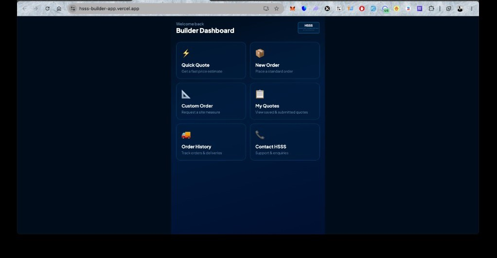

You already have a live ordering channel that most shower screen suppliers do not offer: builders can price and submit from site on their phone. That is real competitive ground. What holds it back is not the idea but the backend: orders can disappear if email fails, the dashboard does not retain builders, and staff still carry the weight of manual follow-up. I recommend evolving what exists in controlled releases: ship registration and verified data storage first, then make every order permanent server-side, then connect AroFlo so jobs enter your workflow without re-keying. The prototype becomes a revenue asset, not a liability, without the cost and risk of starting over.
Every builder who opens this app and gets a price in seconds is a builder who did not call your competitor first. Every order that lands only in an inbox is a job that can be lost, misread, or delayed. The hard work is already done: live pricing, screen configuration, branded emails, and a deployed URL. What HSSS needs now is one accountable technical owner to turn that into a system the business can depend on and grow through. That is the gap this engagement closes.
Business stake: what is on the table
This is not a software vanity project. It is a direct extension of how HSSS wins and keeps builder work. Builders buy on speed and certainty at the job site. Your team sells on quality install and reliable supply. The app sits exactly at that intersection. When it works properly, it shortens the path from measurement to confirmed order. When it does not, builders revert to phone calls, and your sales team absorbs work the app was meant to remove.
| Area | Today | With structured delivery |
|---|---|---|
| Order capture | Browser sends email; failed sends mean lost jobs | Every submission stored; staff always have a record to act on |
| Builder loyalty | No order history; builders cannot track what they submitted | Repeat orders faster; builders stay inside your channel |
| Sales and scheduling load | Bradley's inbox and phone carry standard quoting volume | Stock sizes self-serve; team focuses on custom panels and relationships |
| Operational scale | Growth limited by email quota and manual AroFlo entry | More builders onboarded without matching admin headcount |
| Job management | Email parsing and manual task creation (AutoPilot incomplete) | Orders flow into AroFlo with correct assemblies and client links |
| Investment to date | Pricing engine, diagrams, four screen types, live deployment | Same asset hardened and extended; no sunk-cost rewrite |
The cost of delay is not abstract. Builders who trial the app today see a dashboard that feels unfinished. Two menu items do nothing. There is no sign-out, no name, no status. First impressions stick. Either HSSS fixes that trajectory now with proper ownership, or the app becomes something builders tried once and abandoned while competitors keep the relationship on the phone.
Why the timing works in your favour
You are not starting from zero. The live URL is proof to builders that HSSS is serious about digital ordering. The handoff brief shows someone already encoded years of product knowledge into pricing rules and screen logic. Registration and database hooks are written and waiting. AroFlo integration has a working API proxy and documented lessons that would take a new developer weeks to rediscover.
A rebuild would burn that advantage and push revenue capture months away. Continuing without a technical lead means more ad hoc changes, more risk to the live app, and no path from prototype to CRM. Bringing in structured ownership now means the next dollar spent on development compounds on what already works instead of replacing it.
What I bring to this engagement: a single point of accountability across frontend, database, deployment, and integration. I have already mapped the defects, the undeployed registration work, the CRM gaps, and the phased path to production. I will not need months to understand the codebase before delivering value. The first weeks focus on stabilizing what builders use today and shipping registration safely. Everything after that builds toward a platform HSSS owns outright: your data, your pricing rules, your builder relationships, connected to how you already run jobs in AroFlo.
What HSSS does not need: another experimental build, a part-time developer patching issues without a release process, or a generic agency that will recommend throwing the app away and quoting six figures for a replacement. You need someone who treats this as your sales infrastructure and runs it accordingly.
1. Purpose of this document
This report records my assessment of the HSSS builder ordering application after reviewing the live product, the developer handoff brief, and the full source repository. The project was built without a formal software requirements document or a dedicated technical lead. Business rules live in conversation, in the handoff brief, and inside a large single-file React component. That context shapes how I plan to take ownership.
I am treating this platform as the front end of a builder relationship management system. Today it handles quoting and order intake. A mature version must also retain customer records, order history, staff workflows, and eventually feed HSSS job management in AroFlo. The gap between the current live app and that target is well understood and addressable without discarding what already works.
2. What the platform is meant to do
Hydro Seal Shower Systems supplies semi-frameless shower screens to builders and renovators. The app allows builders on site to configure shower screens, see live prices, and submit orders to HSSS from a phone. It runs as a progressive web app installable from the browser. Two commercial modes apply: supply and install across south-east Queensland, and supply only nationwide.
From a CRM perspective, each builder is a client account. Each submission is a sales opportunity that should become a tracked order with a full audit trail. The handoff brief defines the immediate goal: test thoroughly, fix defects, and deploy the registration flow plus Supabase data layer without breaking live ordering. My plan extends that into a proper client and order management foundation.
3. Current architecture
| Layer | Technology | Role today |
|---|---|---|
| Frontend | React 18, Vite, PWA | All UI, pricing, diagrams, order flows |
| Identity | Supabase Auth | Signup, login, password reset (partial) |
| Data | Supabase Postgres | Builder profiles, site contacts |
| Notifications | EmailJS (client-side) | HTML order emails to HSSS inbox |
| Hosting | Vercel | Static app and serverless API routes |
| Job management | AroFlo API (phase 2) | Proxy exists; not wired to order submit |
The application entry point is AuthWrapper.jsx, which gates access on authentication and a
complete builder profile, then renders App.jsx. That file holds roughly 1,700 lines containing
every screen builder, the pricing engine, SVG diagrams, and order submission logic. Supporting modules handle
email formatting and Supabase hooks for profiles and contacts. A production build completes successfully. The
stack is appropriate for this scale. The main structural issue is concentration of logic in one file and
absence of server-side order storage.
4. Live product assessment
4.1 What works in production today
Four screen types are fully configurable: front and return, front only, splayed, and fixed panel. Custom panel and standalone custom order flows exist. Live pricing reflects supply and install versus supply only tables, colour surcharges, door size upgrades, sliding premiums, and radius corner fees on fixed panels. Builders can schedule delivery dates, label multi-screen jobs, save site contacts, run quick quotes, and edit or remove screens before submit. Order emails include branded HTML and per-screen diagrams. Measurement inputs accept free numeric entry with min and max enforced on blur, matching the handoff specification.
4.2 Current dashboard (live screenshot)

For a builder using this daily, the dashboard should answer three questions immediately: who am I logged in as, what is the status of my recent orders, and what should I do next. The current screen answers none of these. It is a launcher, not a workspace. For HSSS staff, there is no admin view at all. Improving this surface is part of making the product credible in the field, not a cosmetic preference.
4.3 Built in code but not safely in production
A three-step registration flow exists in AuthWrapper.jsx and captures company name, ABN, contact
details, service type, region, and address. Site contact persistence is wired to a site_contacts
table through useBuilderDB.js. However, no SQL migrations appear in the repository, row level
security policies cannot be reviewed from source control, and registration has not been validated on a staging
deploy against production data. Password reset emails reference a /reset-password route that does
not exist. PWA icon files are now present in the repository under public/; confirm they are
deployed correctly on production. These items block a confident registration release.
4.4 Documented product rules not yet reflected in software
| Handoff reference | Codebase state |
|---|---|
| Slider as a screen type | Sliding door option on front only only; no slider screen builder |
| Brushed gold finish | Labelled as brushed brass in the app |
| 60mm standard waterstop | 21mm, 42mm, and 60mm all offered |
| Panel sizing formulas (hob to HSSFPI SKU) | Pricing uses dimensions; SKU resolution not shown to user |
| My quotes | Dashboard tile present; no route or data layer |
| Order history | Dashboard tile present; hook returns empty array always |
| Formal SRS or specification | Does not exist; handoff brief is the sole written spec |
5. Bugs and defects identified in review
The following issues were found through static code review, comparison against the developer handoff brief, and inspection of the live dashboard. Severity reflects user or business impact, not implementation effort. Items marked fixed should still be verified on a real device before sign-off.
| ID | Severity | Issue | Location | Status |
|---|---|---|---|---|
| BUG-01 | Critical | Submitted orders are not saved to the database. If EmailJS fails, HSSS may never receive the job and the builder has no record to reference. | App.jsx submitOrder; no orders table in repo |
Open |
| BUG-02 | Critical | Order confirmation screen is shown before the email send completes. The user sees "submitted" while delivery is still in progress, which masks failures until after the fact. | App.jsx lines 1679 to 1683 |
Open |
| BUG-03 | High | Dashboard tile "My quotes" is visible but has no navigation handler. Tapping it does nothing. | App.jsx Dashboard and onNavigate switch (lines 1695 to 1700) |
Open |
| BUG-04 | High | Dashboard tile "Order history" is visible but has no navigation handler. Tapping it does nothing. | App.jsx same onNavigate handler |
Open |
| BUG-05 | High | useBuilderOrders is a stub: it always returns an empty list and never queries Supabase. Order history cannot work until implemented. |
useBuilderDB.js lines 228 to 259 |
Open |
| BUG-06 | High | Password reset emails redirect to /reset-password, but no page or route exists in the application. |
AuthWrapper.jsx line 276 |
Open |
| BUG-07 | High | signOut is passed into the main app but never used in the UI. Logged-in builders cannot sign out from the dashboard or ordering flows. |
App.jsx line 1640; AuthWrapper.jsx passes prop |
Open |
| BUG-08 | Medium | Fixed panel pricing for widths between 986mm and 1034mm falls through to the small-panel price. Handoff brief flags this range as a known gap needing a business rule. | App.jsx calcPrice fixed panel branch |
Open (confirm with Brad) |
| BUG-09 | Medium | Custom order emails do not include builder company or contact details from the logged-in profile, unlike standard order emails. | emailService.js sendCustomOrderEmail |
Open |
| BUG-10 | Medium | Pricing mode (customerType) is set from the builder profile once at load. There is no in-app control to change supply and install vs supply only during a session. |
App.jsx line 1645 |
Open |
| BUG-11 | Medium | Large multi-screen orders can exceed the EmailJS payload limit. Diagram images are stripped from the email without warning to the builder. | emailService.js lines 481 to 485 |
Open |
| BUG-12 | Medium | Supabase project URL and anon key are hardcoded in source instead of environment variables. Security depends entirely on row level security policies that are not versioned in the repo. | supabaseClient.js |
Open |
| BUG-13 | Medium | No SQL migration files in the repository. Schema and RLS policies cannot be reviewed, reproduced, or deployed consistently from source control. | Repository root (missing supabase/migrations) |
Open |
| BUG-14 | Medium | AroFlo API proxy is protected by a hardcoded PIN (7788) with open CORS. Not suitable for production CRM integration without hardening. |
api/aroflo.js, api/aroflo-test.js |
Open |
| BUG-15 | Low | Approximately 400 lines of unused auth UI (LoginScreen, RegisterScreen, SplashScreen, PendingScreen) remain in App.jsx while live auth runs through AuthWrapper.jsx. Increases maintenance risk and confusion. |
App.jsx lines 1029 to 1131 |
Open |
| BUG-16 | Low | Product naming mismatch: handoff brief lists brushed gold; application displays brushed brass. | App.jsx COLOURS constant |
Open (product decision) |
| BUG-17 | Fixed | SplashScreen used useState for a timeout side effect. Handoff brief flagged this; current code uses useEffect correctly. Component is not used in the live auth path. |
App.jsx line 1031 |
Fixed (verify if re-enabled) |
| BUG-18 | Fixed | Measurement inputs: steppers move by 50mm; free numeric entry works; min and max enforced on blur. Matches handoff specification. | App.jsx MeasurementInput |
Fixed |
| BUG-19 | Fixed | Edit and remove on order summary with inline remove confirmation. Matches handoff specification. | App.jsx QuoteSummary |
Fixed |
Summary: 14 open issues (2 critical, 5 high, 7 medium, 2 low), 3 confirmed fixed from the handoff checklist. Critical items BUG-01 and BUG-02 are the highest business priority because they directly affect whether HSSS receives paid work. High-severity dashboard and auth issues (BUG-03 to BUG-07) undermine builder trust on first use. Medium items should be addressed during stabilization and before registration goes to production.
6. CRM and data integrity gaps
A CRM system requires that every client interaction is recorded, retrievable, and attributable. Today an order exists only if EmailJS successfully delivers a message to the HSSS inbox. The application navigates to a success screen before email completion. If sending fails, the builder sees a warning but HSSS may never receive the job. There is no duplicate protection, no submission log, and no way for a builder to revisit a past order in the app.
The useBuilderOrders hook is a stub. Builder profiles and site contacts are the only persisted
CRM entities. EmailJS free tier allows roughly two hundred messages per month, which will constrain growth.
Large multi-screen orders risk hitting EmailJS payload limits; the code already strips diagrams when the
message exceeds size thresholds.
Supabase credentials are hardcoded in the client bundle. That is common for anon keys when row level security is correct, but policies are not versioned in the repository, so security posture cannot be verified by inspection alone. The AroFlo proxy uses a fixed PIN and open cross-origin access, which is acceptable for internal testing only.
7. Confirmed handoff checklist
| Item from handoff brief | Status |
|---|---|
| SplashScreen side-effect bug (useState vs useEffect) | Fixed in code; component unused in live auth path |
| Measurement inputs: steppers and free typing | Implemented as specified |
| Edit and remove on order summary | Implemented with inline confirmation |
| Radius corner $150 surcharge | Implemented |
| Fixed panel pricing gap 986 to 1034mm | Falls through to small panel price; needs business confirmation |
| Job site address per order | Required on each order (correct for varying sites) |
| Email import contract in App.jsx | Must remain stable through initial release phase |
8. Recommendation: evolve, do not rebuild
A full rewrite would delay value across many weeks of rework, reintroduce pricing risk, and disrupt builders already using the live URL. The existing engine encodes non-trivial domain knowledge: surcharge rules, screen geometry, diagram generation, and email layout. The correct engineering path is to add the layers a prototype lacks: versioned schema, server-side order capture, modular code structure, automated tests on pricing, and phased AroFlo integration.
Release discipline will be branch-based preview deploys on Vercel, regression testing on ordering and email before every production merge, and no direct pushes to main for authentication or database changes until staging sign-off is complete.
9. Delivery plan
Typical focus over the first few weeks. Obtain Supabase, Vercel, and EmailJS access. Run full mobile QA on iOS Safari and Android Chrome across all screen types and both pricing modes. Fix priority defects. Export Supabase schema and row level security into versioned migrations in the repository. Deploy registration and site contacts on a preview branch, then production after sign-off. Add missing PWA assets, password reset page, and sign-out in the main app. Hide or properly stub non-functional dashboard tiles until data exists behind them.
Typical focus over the following weeks once stabilization is complete. Introduce orders and
order_items tables linked to builders. Move submission to a server-side function that writes to
the database first, then sends email with retry logic. Implement order history and saved quotes in the
dashboard. Replace client-only EmailJS as the system of record with a server-side mail provider when volume
requires it. Redesign the dashboard to show builder identity, recent orders, and clear next actions.
Typical focus over subsequent weeks as features stabilize. Split App.jsx into feature modules.
Add TypeScript for pricing and order models. Unit test calcPrice() and panel formulas from the
handoff document. Introduce linting and continuous integration. Externalize pricing tables so commercial
updates do not always require code changes.
Typical focus once order persistence is proven in production. Secure the AroFlo proxy behind authenticated sessions. Create tasks on order submit using the existing HMAC integration pattern. Map builders to AroFlo clients once the full client list issue is resolved with AroFlo support. Apply assembly resolver logic for line items. Run parallel email parsing only as fallback until API submission is proven on real orders.
Ongoing work as the platform matures. HSSS staff portal for registration approval, order review, and pricing overrides. Builder notifications on status changes. Slider screen type when the panel formula is confirmed. Operational analytics on order volume and configuration mix. Custom production domain and monitoring.
10. Scalability approach
Vercel and Supabase are sufficient for thousands of monthly orders without platform migration. Scaling effort belongs in application design: server-side validation prevents price tampering, indexed order tables support fast history queries, cached AroFlo product lookups respect the two thousand calls per day limit, and structured logging plus error tracking surface failures before builders report them.
Configuration-driven pricing and region rules allow HSSS to adjust commercial terms without redeploying the entire frontend. Modular code allows a second developer to contribute on admin features once the monolith is split. Migrations in source control mean database state is reproducible and reviewable, which this project currently lacks.
11. Risk summary
| Risk | Severity | Mitigation |
|---|---|---|
| Orders lost when email fails | High | Server-side persistence in phase 2; never rely on client email alone |
| Registration deploy breaks live ordering | High | Preview branch, RLS audit, ordered regression checklist |
| EmailJS monthly quota | Medium | Monitor volume; migrate to server mail provider |
| Incomplete AroFlo client list via API | Medium | Manual mapping table until AroFlo support resolves access |
| Monolith slows delivery | Medium | Modular refactor in phase 3 |
| No formal spec beyond handoff brief | Medium | Document decisions in repo as lightweight product notes; confirm rules with Brad |
12. Access required to begin
Supabase dashboard and service role for policy review. Vercel project and environment variables. EmailJS account for template and quota review. AroFlo credentials for staging integration tests. Product decisions on fixed panel pricing between 986 and 1034mm, finish naming (gold vs brass), and slider formula when available.
13. Commercial outcomes of delivery
When this work is executed as planned, HSSS gains measurable business capability even before every feature is complete. Registration and persistent builder profiles mean you know who is ordering and can approve accounts deliberately. Server-side order storage means revenue opportunities are never hostage to an email provider. Order history means builders reorder through you instead of re-quoting elsewhere. AroFlo integration means scheduling and production see jobs sooner with fewer transcription errors. Admin visibility means leadership can see volume and configuration trends without asking staff to compile reports.
None of that requires betting on a new product. It requires finishing what you started with discipline. That is the business case for moving forward now with dedicated technical leadership rather than leaving the app in maintenance limbo.
HSSS is closer to a real builder platform than this report's defect list might suggest on its own. The live app, the pricing engine, and the product knowledge embedded in the code are assets your competitors do not have sitting ready to scale. What is missing is the layer that turns a clever prototype into business infrastructure: reliable orders, returning users, staff workflows, and a codebase someone owns end to end. I am prepared to provide that ownership. The live app stays up. The investment you have already made is protected. The outcome is a system builders trust and your team can run without depending on one inbox and improvised fixes.